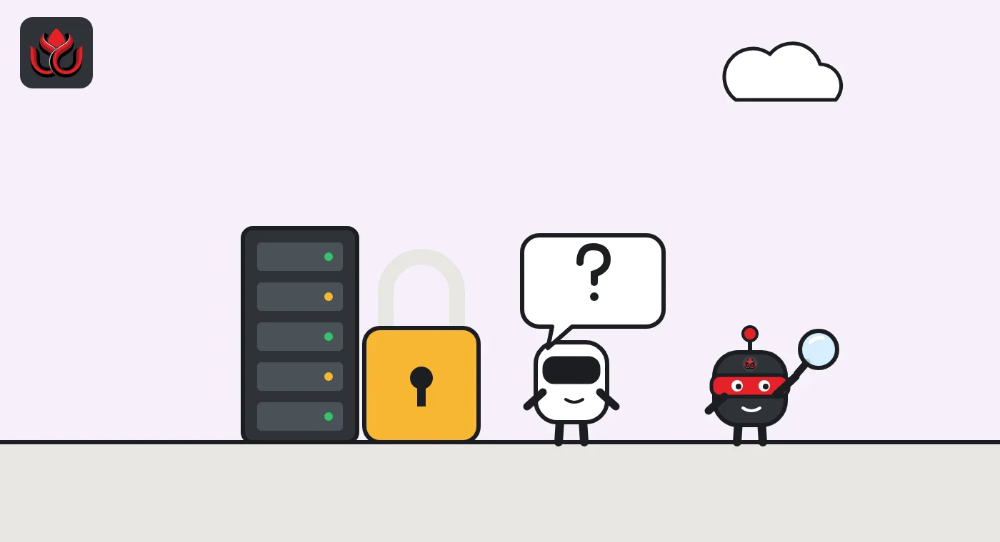

BNY and Citadel settled a tokenized Treasury in minutes, then borrowed cash against it
Citadel Securities bought a two-year Treasury note, BNY settled a tokenized version within minutes instead of the next day, and Citadel pledged it overnight for cash. BNY calls it the first use of tokenized assets on a major triparty repo platform.
Key points
- BNY said on October 13, 2026, it completed a triparty repo with Citadel Securities using a tokenized two-year US Treasury note.
- The note settled within minutes on BNY's private ledger instead of the usual next day (T+1), then served as collateral for an overnight cash loan.
- No deal size was disclosed. BNY plans more tokenized cash products and longer settlement hours, reaching into European and Asian hours next year.
What BNY and Citadel did
BNY settled a tokenized US Treasury note for Citadel Securities in minutes and then lent Citadel cash against it overnight, the bank said on October 13, 2026. The deal ran through a triparty repo, a core funding market, according to the bank's press release. BNY described it as the first use of tokenized assets on a major triparty repo platform.
The deal ran in three steps. Citadel Securities bought a two-year US Treasury note through BNY on Tradeweb, an electronic bond trading venue. BNY then recorded a tokenized version of the note on its private digital ledger and settled it within minutes, rather than on the standard next-day (T+1) cycle. Finally, Citadel used the tokenized note as collateral in an overnight triparty repo and received cash from BNY in return.
Carolyn Weinberg, BNY's chief innovation and market transformation officer, said the deal "demonstrates what becomes possible when tokenized assets are used in institutional workflows." Dan Doherty, who leads digital assets operations at Citadel Securities, said the work showed how tokenized Treasuries can move from settlement into financing with less friction.
Repo in plain English
A repo (repurchase agreement) is a short-term loan backed by collateral. One side sells securities, often Treasuries, and agrees to buy them back later, usually the next day, at a slightly higher price. The difference is the interest. It is one of the main ways banks, dealers and funds borrow and lend cash overnight.
In a triparty repo, a third party sits in the middle and handles the collateral: checking it, valuing it and moving it between the two sides. BNY describes itself as a leading settlement agent and collateral manager in the US Treasury market. That is why this matters: a token is being tested inside core funding plumbing, not on a side platform.
What BNY plans next
BNY said it plans to add more digital cash and tokenized deposit features for institutional clients, aimed at settlement and financing on blockchain ledgers. It also expects to extend operating hours for its traditional settlement platforms for Fed-eligible securities and US triparty deals, with a view to covering European and Asian trading hours next year.
The bank framed tokenization and longer hours as two parts of the same move toward round-the-clock markets. Brian Ruane, who runs clearance and collateral management at BNY, linked the deal to a Treasury market that is becoming more continuous. BNY pointed readers to a BNY Institute paper on how the Treasury market may change.
For scale, BNY said it oversaw $62.6 trillion in assets under custody or administration and $2.2 trillion in assets under management as of June 30, 2026.
What was not disclosed
The size of the Treasury purchase, the repo and the cash leg were not disclosed. The ledger used is BNY's own private system, not a public blockchain. The release also did not name the triparty platform or say how long the tokenized note stays on the ledger after the repo ends.
Citadel Securities was both buyer of the note and borrower in the repo, with BNY as cash lender. So this was one bank and one client completing the full cycle inside BNY's own systems. It was not a trade between several outside parties on a shared network.

How big public tokenized Treasuries are
Public tokenized Treasury funds are a separate, smaller market that runs on public blockchains. The rwa.xyz dashboard counted $14.21 billion of distributed value across 119 products on November 2, 2026, down about 4% from 30 days earlier. Ondo, Franklin Templeton's Benji platform, Circle and Securitize were the largest platforms.
Largest public tokenized Treasury products, November 2, 2026
US$ billion
Source: rwa.xyz, accessed November 2, 2026
A busy month for bank tokens
BNY's repo test was one of several bank tokenization moves in October. On October 19, J.P. Morgan said its Kinexys unit had brought JPM Coin (JPMD), its US dollar deposit token, to Ethereum for institutional clients. JPM Coin launched on Base in November 2025. Kinexys says its platform has processed more than $4 trillion since inception, with about $7 billion a day on average.
On October 22, SoFi launched SoFi Earn, a tokenized deposit for consumers that pays 4.40% APY and is FDIC-insured up to the usual limits.
Each takes a different route. BNY tokenized the collateral, a Treasury note, and kept it on a private ledger. J.P. Morgan tokenized the cash and put it on public chains for institutional clients. SoFi tokenized cash for consumers. Taken together, they show large US banks testing both legs of a trade, the asset and the money, on blockchain rails.
Timeline
JPM Coin launches on Base
BNY announces tokenized Treasury triparty repo with Citadel Securities
JPM Coin goes live on Ethereum
SoFi launches a consumer tokenized deposit
Public tokenized Treasury funds at $14.21 billion, per rwa.xyz
LC Insight analysis
This section is our reading of the facts above, not a statement of fact.
- We think this matters more than many token launches, even without a size. Repo is where Treasuries do their daily work, and showing a token can move through it inside existing bank systems answers a common objection to tokenization.
- The private ledger is the catch. BNY proved it can tokenize and settle a Treasury inside its own walls. The hard part is letting that token move to other banks, or public chains, without losing the legal certainty that makes repo safe.
- Next comes a race between bank ledgers and public tokenized funds to become the default collateral rail. Longer settlement hours suggest BNY wants to be ready if markets move toward 24-hour trading.
What's next
- Whether BNY discloses volumes or brings in more repo counterparties
- BNY's extension of settlement hours into European and Asian sessions
- New BNY digital cash and tokenized deposit products
- Use of tokenized money market funds as repo collateral
Disclaimer. This article is based on public information and the sources listed below as of the update time shown. It is for information only and is not investment, legal or tax advice. Figures may change as companies and authorities publish new data.
Sources
- BNY, BNY completes tokenized U.S. Treasury triparty repo workflow with Citadel Securities (October 13, 2026)
- BNY Institute, The next U.S. Treasury market evolution
- rwa.xyz, Tokenized U.S. Treasury Funds dashboard (November 2, 2026)
- J.P. Morgan, JPM Coin goes live on Ethereum (October 19, 2026)
- SoFi Technologies, SoFi launches SoFi Earn (October 22, 2026)